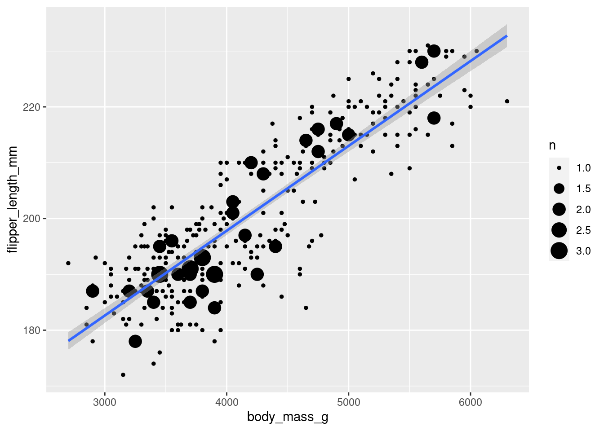

library(readr)
library(missMethods)
library(simputation)
library(ggplot2)
set.seed(1)
penguins <- readr::read_csv('penguins.csv')
regg = lm(body_mass_g~ flipper_length_mm, data = penguins)
#print(paste(summary(regg)$adj.r.squared, "is the R-Squared for the linear model"))4. Analysis
4.1 Linear Regression on Full Dataset
In order to understand the benefits of imputation, we need to perform a linear regression on the entire data set in order to have a reference for what the R-Squared value can be will all of the available data.
0.7583 is the R-Squared for the linear model that we will use as the benchmark for the imputation perfromed below.
4.2 Creating Missingness
To demonstrate the benefits of imputation, we will create missingness in a predictor variable and create a model by excluding the missing data. Then we will perform imputation on the dataset and recreate the model to see if there is a difference in performance. Before we perform imputations on the penguins (Horst, Hill, and Gorman 2020) dataset, first the data must be cleaned to omit all incomplete records so we can have the actual values to compare our imputations against. The code block below demonstrates the penguins dataset that we will be using, cleaning the incomplete records, and displays the correlation using the ggplot2 (Wickham 2016) package between body_mass_g and flipper_legth_mm that we will be using to construct a model before and after imputation of missing data.
penguin_rows_with_na <- penguins[!complete.cases(penguins), ]
print(penguin_rows_with_na)# A tibble: 11 × 8
species island bill_length_mm bill_depth_mm flipper_length_mm body_mass_g
<chr> <chr> <dbl> <dbl> <dbl> <dbl>
1 Adelie Torgersen NA NA NA NA
2 Adelie Torgersen 34.1 18.1 193 3475
3 Adelie Torgersen 42 20.2 190 4250
4 Adelie Torgersen 37.8 17.1 186 3300
5 Adelie Torgersen 37.8 17.3 180 3700
6 Adelie Dream 37.5 18.9 179 2975
7 Gentoo Biscoe 44.5 14.3 216 4100
8 Gentoo Biscoe 46.2 14.4 214 4650
9 Gentoo Biscoe 47.3 13.8 216 4725
10 Gentoo Biscoe 44.5 15.7 217 4875
11 Gentoo Biscoe NA NA NA NA
# ℹ 2 more variables: sex <chr>, year <dbl>penguins_filtered <- na.omit(penguins)
ggplot(penguins_filtered, aes(body_mass_g, flipper_length_mm)) +
geom_count() +
geom_smooth(method='lm')`geom_smooth()` using formula = 'y ~ x'
In the code block below, we will create 50% missing at random data in the column flipper_length_mm using the missMethods (Rockel 2022) package. Then we will create a linear regression to display the r-squared that would be achieved by deleting the missing data from the data set.
penguins_missing <- delete_MCAR(penguins,0.5,"flipper_length_mm")
regg = lm(body_mass_g~ flipper_length_mm, data = penguins_missing, na.action=na.omit)
#print(paste(summary(regg)$adj.r.squared, "is the R-Squared for the linear model where missing values are excluded from the dataset."))0.7569 is the R-Squared for the linear model where missing values are excluded from the dataset. Although this R-Squared is good, it omits half of the data since 50% of the values for flipper_length_mm are missing. In the following code blocks, we will explore imputation of the the missing data.
4.3 Single Imputation
The most simple way to perform imputation is with the mean or median of the variable. However doing so will reduce the overall variability in the dataset.
# Make a copy of the dataset and calculate the mean of the specific column
penguins_Mean_imputated <- penguins_missing
# If we only replaced the missing values for flipper_length_mm
flipper_length_mm_mean_value <- mean(penguins$flipper_length_mm, na.rm = TRUE)
penguins_Mean_imputated$flipper_length_mm[is.na(penguins_Mean_imputated$flipper_length_mm)] <- flipper_length_mm_mean_value
penguins_Mean_imputated[!complete.cases(penguins), ]# A tibble: 11 × 8
species island bill_length_mm bill_depth_mm flipper_length_mm body_mass_g
<chr> <chr> <dbl> <dbl> <dbl> <dbl>
1 Adelie Torgersen NA NA 201. NA
2 Adelie Torgersen 34.1 18.1 201. 3475
3 Adelie Torgersen 42 20.2 190 4250
4 Adelie Torgersen 37.8 17.1 186 3300
5 Adelie Torgersen 37.8 17.3 180 3700
6 Adelie Dream 37.5 18.9 201. 2975
7 Gentoo Biscoe 44.5 14.3 216 4100
8 Gentoo Biscoe 46.2 14.4 201. 4650
9 Gentoo Biscoe 47.3 13.8 201. 4725
10 Gentoo Biscoe 44.5 15.7 201. 4875
11 Gentoo Biscoe NA NA 201. NA
# ℹ 2 more variables: sex <chr>, year <dbl>regg = lm(body_mass_g~ flipper_length_mm, data = penguins_Mean_imputated, na.action=na.omit)
#print(paste(summary(regg)$adj.r.squared, "is the R-Squared for the linear model where missing values are imputed as the mean."))0.4016 is the R-Squared for the linear model where missing values are imputed as the mean.
# Make a copy of the dataset and calculate the mean of the specific column
penguins_Median_imputated <- penguins_missing
# If we only replaced the missing values for flipper_length_mm
flipper_length_mm_median_value <- median(penguins$flipper_length_mm, na.rm = TRUE)
penguins_Median_imputated$flipper_length_mm[is.na(penguins_Median_imputated$flipper_length_mm)] <- flipper_length_mm_median_value
penguins_Median_imputated[!complete.cases(penguins), ]# A tibble: 11 × 8
species island bill_length_mm bill_depth_mm flipper_length_mm body_mass_g
<chr> <chr> <dbl> <dbl> <dbl> <dbl>
1 Adelie Torgersen NA NA 197 NA
2 Adelie Torgersen 34.1 18.1 197 3475
3 Adelie Torgersen 42 20.2 190 4250
4 Adelie Torgersen 37.8 17.1 186 3300
5 Adelie Torgersen 37.8 17.3 180 3700
6 Adelie Dream 37.5 18.9 197 2975
7 Gentoo Biscoe 44.5 14.3 216 4100
8 Gentoo Biscoe 46.2 14.4 197 4650
9 Gentoo Biscoe 47.3 13.8 197 4725
10 Gentoo Biscoe 44.5 15.7 197 4875
11 Gentoo Biscoe NA NA 197 NA
# ℹ 2 more variables: sex <chr>, year <dbl>regg = lm(body_mass_g~ flipper_length_mm, data = penguins_Median_imputated, na.action=na.omit)
print(paste(summary(regg)$adj.r.squared, "is the R-Squared for the linear model where missing values are imputed as the median."))[1] "0.403663788774948 is the R-Squared for the linear model where missing values are imputed as the median."0.4037 is the R-Squared for the linear model where missing values are imputed as the median.
As we can see the R-Squared dramatically decreased since we performed a basic version of imputation that just inserts one number for all missing values. Now we will proceed to impute linear model predicted values using the simputation (Loo 2022) package into the missing data set for bill_length_mm and construct the same model to achieve an increase in r-squared.
penguins_imputed <- impute_lm(penguins_missing, flipper_length_mm ~ species + bill_length_mm + bill_depth_mm)
regg = lm(body_mass_g~ flipper_length_mm, data = penguins_imputed)
#print(paste(summary(regg)$adj.r.squared, "is the R-Squared for the linear model where imputation of missing values was performed with another linear model before modeling."))0.7732 is the R-Squared for the linear model where imputation of missing values was performed with another linear model before modeling.
4.4 Multiple Imputation
To use a more complex form of imputation, we will perform multiple imputation on the data set using the mice library (Buuren and Groothuis-Oudshoorn 2011).
library(mice)
penguins_missing.imp <- mice(penguins_missing, m=5)
iter imp variable
1 1 bill_length_mm bill_depth_mm flipper_length_mm body_mass_g
1 2 bill_length_mm bill_depth_mm flipper_length_mm body_mass_g
1 3 bill_length_mm bill_depth_mm flipper_length_mm body_mass_g
1 4 bill_length_mm bill_depth_mm flipper_length_mm body_mass_g
1 5 bill_length_mm bill_depth_mm flipper_length_mm body_mass_g
2 1 bill_length_mm bill_depth_mm flipper_length_mm body_mass_g
2 2 bill_length_mm bill_depth_mm flipper_length_mm body_mass_g
2 3 bill_length_mm bill_depth_mm flipper_length_mm body_mass_g
2 4 bill_length_mm bill_depth_mm flipper_length_mm body_mass_g
2 5 bill_length_mm bill_depth_mm flipper_length_mm body_mass_g
3 1 bill_length_mm bill_depth_mm flipper_length_mm body_mass_g
3 2 bill_length_mm bill_depth_mm flipper_length_mm body_mass_g
3 3 bill_length_mm bill_depth_mm flipper_length_mm body_mass_g
3 4 bill_length_mm bill_depth_mm flipper_length_mm body_mass_g
3 5 bill_length_mm bill_depth_mm flipper_length_mm body_mass_g
4 1 bill_length_mm bill_depth_mm flipper_length_mm body_mass_g
4 2 bill_length_mm bill_depth_mm flipper_length_mm body_mass_g
4 3 bill_length_mm bill_depth_mm flipper_length_mm body_mass_g
4 4 bill_length_mm bill_depth_mm flipper_length_mm body_mass_g
4 5 bill_length_mm bill_depth_mm flipper_length_mm body_mass_g
5 1 bill_length_mm bill_depth_mm flipper_length_mm body_mass_g
5 2 bill_length_mm bill_depth_mm flipper_length_mm body_mass_g
5 3 bill_length_mm bill_depth_mm flipper_length_mm body_mass_g
5 4 bill_length_mm bill_depth_mm flipper_length_mm body_mass_g
5 5 bill_length_mm bill_depth_mm flipper_length_mm body_mass_gfit <- with(penguins_missing.imp, lm(body_mass_g~ flipper_length_mm))
print(pool.r.squared(fit)) est lo 95 hi 95 fmi
R^2 0.7404551 0.6794023 0.7915921 0.3094308Since multiple imputation creates multiple linear regressions based on multiple imputations, the estimated r-value is 0.7317 with a 95% confidence interval between 0.6664 and 0.7861. Although the R-Squared estimate is lower than the single imputation based on linear regression, this method performs much better than mean and median single imputations performed previously.
4.5 Other Considerations
As shown in the R-Squared output for each model. We can see a small improvement in the accuracy of this model by performing imputation. This accuracy was possible since there wasnt an issue with missing values in species, bill_length_mm, and bill_depth_mm which were used to impute flipper_length_mm. But what happens if these variables contained large amounts of missing values that must be replaced as well?
penguins_missing <- delete_MCAR(penguins,0.5,c("flipper_length_mm","bill_length_mm","bill_depth_mm","body_mass_g","species","sex"))
tryCatch(
{
penguins_imputed_missing <- impute_lm(penguins_missing, flipper_length_mm ~ species + bill_length_mm + bill_depth_mm)
penguins_imputed_missing[!complete.cases(penguins_imputed_missing), ]
regg = lm(body_mass_g~ flipper_length_mm, data = penguins_imputed_missing)
print(paste(summary(regg)$adj.r.squared, "is the R-Squared for the linear model where imputation of missing values was performed with another linear model before modeling."))
},
error = function(e)
{
print("This caused an error!") # or whatever error handling code you want
}
)[1] "0.775086843813264 is the R-Squared for the linear model where imputation of missing values was performed with another linear model before modeling."It is important to note, that although it appears that we are imputing missing values in the code, the linear model fails to impute when there are missing values in the predicting variables. To avoid this error, below we will impute most of the missing data with mean or mode and attempt to impute flipper_length_mm with a linear model. This method will not be accurate due to the same underlying issue that we saw with imputing mean before.
penguins_missing <- delete_MCAR(penguins,0.5,c("flipper_length_mm","bill_length_mm","bill_depth_mm","body_mass_g","species","sex"))
bill_length_mm_mean_value <- mean(penguins$bill_length_mm, na.rm = TRUE)
bill_depth_mm_mean_value <- mean(penguins$bill_depth_mm, na.rm = TRUE)
flipper_length_mm_mean_value <- mean(penguins$flipper_length_mm, na.rm = TRUE)
body_mass_g_mean_value <- mean(penguins$body_mass_g, na.rm = TRUE)
species_mode_value <- mode(penguins$species)
sex_mode_value <- mode(penguins$sex)
# Replace NAs in the specific column with the mean
penguins_Mean_imputated$bill_length_mm[is.na(penguins_Mean_imputated$bill_length_mm)] <- bill_length_mm_mean_value
penguins_Mean_imputated$bill_depth_mm[is.na(penguins_Mean_imputated$bill_depth_mm)] <- bill_depth_mm_mean_value
penguins_Mean_imputated$flipper_length_mm[is.na(penguins_Mean_imputated$flipper_length_mm)] <- flipper_length_mm_mean_value
penguins_Mean_imputated$body_mass_g[is.na(penguins_Mean_imputated$body_mass_g)] <- body_mass_g_mean_value
penguins_Mean_imputated$species[is.na(penguins_Mean_imputated$species)] <- species_mode_value
penguins_Mean_imputated$sex[is.na(penguins_Mean_imputated$sex)] <- sex_mode_value
penguins_Mean_imputated[!complete.cases(penguins_Mean_imputated), ]# A tibble: 0 × 8
# ℹ 8 variables: species <chr>, island <chr>, bill_length_mm <dbl>,
# bill_depth_mm <dbl>, flipper_length_mm <dbl>, body_mass_g <dbl>, sex <chr>,
# year <dbl>penguins_imputed <- impute_lm(penguins_Mean_imputated, flipper_length_mm ~ species + bill_length_mm + bill_depth_mm)
regg = lm(body_mass_g~ flipper_length_mm, data = penguins_imputed)
#print(paste(summary(regg)$adj.r.squared, "is the R-Squared for the linear model where imputation of missing values was performed with another linear model before modeling."))0.4016 is the R-Squared for the linear model where imputation of missing values was performed with another linear model before modeling.
References
Buuren, Stef van, and Karin Groothuis-Oudshoorn. 2011. “Mice: Multivariate Imputation by Chained Equations in r” 45: 1–67. https://doi.org/10.18637/jss.v045.i03.
Horst, Allison Marie, Alison Presmanes Hill, and Kristen B Gorman. 2020. “Palmerpenguins: Palmer Archipelago (Antarctica) Penguin Data.” https://doi.org/10.5281/zenodo.3960218.
Loo, Mark van der. 2022. “Simputation: Simple Imputation.” https://CRAN.R-project.org/package=simputation.
Rockel, Tobias. 2022. “missMethods: Methods for Missing Data.” https://CRAN.R-project.org/package=missMethods.
Wickham, Hadley. 2016. “Ggplot2: Elegant Graphics for Data Analysis.” https://ggplot2.tidyverse.org.